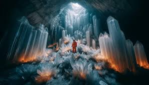

<link rel="stylesheet" href="styles.css">


<main>
    <div class="passo ativo" id="passo-0">
            
            <p>Em uma pequena vila isolada nas montanhas, vivia uma jovem chamada Lara. Ela passava seus dias ajudando sua avó a cuidar do jardim e ouvir histórias antigas sobre um antigo artefato mágico, o Cristal da Lua , que estava perdido há gerações.</p>
            <button class="btn-proximo" data-proximo="1">O Chamado para a Aventura</button>
            <button class="btn-proximo" data-proximo="2">Aventura</button>
    </div>
    <div class="passo" id="passo-1">
            <p>Um dia, enquanto explorava o bosque próximo, Lara encontrou um antigo mapa escondido sob uma pedra. O mapa parecia indicar o local onde o Cristal da Lua estava escondido. Lara sentiu que esta era a oportunidade de descobrir a verdade por trás das histórias que ouvira.</p>
            <button class="btn-proximo" data-proximo="3">A Recusa do Chamado</button>
            <button class="btn-proximo" data-proximo="4">Encontro com o Mentor</button>
    </div>
    <div class="passo" id="passo-2">
            <p>Você começa sua jornada para uma aventura para encontrar a primeira pista.</p>
            <button class="btn-proximo" data-proximo="5">Travessia do Primeiro Portal</button>
            <button class="btn-proximo" data-proximo="6">Provações, Aliados e Inimigos</button>
    </div>
    <div class="passo" id="passo-3">
            <p>Inicialmente, Lara hesitou em seguir o mapa. A ideia de se aventurar além das montanhas e enfrentar o desconhecido a assustava. Ela temia deixar sua avó e a segurança de sua casa.</p>
            <button class="btn-proximo" data-proximo="7">Aproximação da Caverna Secreta</button>
    </div>

    <div class="passo" id="passo-4">
                   
            <p> Seu avô, que já havia partido para o mundo dos espíritos, apareceu em um sonho e a encorajou a seguir sua jornada. Ele lhe deu uma bússola mágica que ajudaria a encontrar o caminho e se proteger dos perigos.</p>
            <button class="btn-proximo" data-proximo="7">Aproximação da Caverna Secreta</button>
    </div>


    <div class="passo" id="passo-5">
            <p>Com o coração decidido, Lara partiu. Ao cruzar a fronteira da vila, entrou em um reino de florestas encantadas e criaturas misteriosas. Ela teve que atravessar um rio mágico para continuar sua busca.</p>
            <button class="btn-proximo" data-proximo="7">Aproximação da Caverna Secreta</button>
    </div>

    <div class="passo" id="passo-6">
            <p>No caminho, Lara encontrou aliados, como uma fada travessa chamada Elara, e enfrentou inimigos, como um grupo de bandidos e um dragão guardião. Cada desafio testou suas habilidades e coragem.</p>
            <button class="btn-proximo" data-proximo="8">Provação Central</button>
    </div>

    <div class="passo" id="passo-7">
            <p>Finalmente, Lara chegou à entrada de uma caverna oculta, onde o mapa indicava que o Cristal da Lua estava escondido. A caverna era cheia de armadilhas e enigmas que ela precisava resolver para avançar.</p>
            <button class="btn-proximo" data-proximo="9">Recompensa</button>
            <button class="btn-proximo" data-proximo="10">O Caminho de Volta</button>
    </div>

    <div class="passo" id="passo-8">
            <p>No coração da caverna, Lara encontrou o Cristal da Lua guardado por uma antiga entidade, uma sentinela mágica. Ela teve que enfrentar uma série de desafios mentais e físicos para provar que era digna do poder do cristal.</p>
            <button class="btn-proximo" data-proximo="7">Aproximação da Caverna Secreta</button>
    </div>

    <div class="passo" id="passo-9">
            <p>Após superar a provação, Lara conseguiu pegar o Cristal da Lua. Ele brilhou intensamente, revelando sua verdadeira natureza e proporcionando a ela uma visão de como o cristal podia trazer equilíbrio e prosperidade para sua vila.</p>
            <button class="btn-proximo" data-proximo="11">Ressurreição</button>
    </div>

    <div class="passo" id="passo-10">
            <p> Com o Cristal da Lua em mãos, Lara começou a jornada de volta para a vila. No caminho, ela refletiu sobre as lições aprendidas e os desafios superados. Sentia-se mais forte e confiante.</p>
            <button class="btn-proximo" data-proximo="12">Retorno com o Elixir</button>
    </div>

    <div class="passo" id="passo-11">
            <p>Ao chegar de volta à vila, Lara encontrou a vila ameaçada por uma seca severa. Usando o poder do Cristal da Lua, ela trouxe chuva e renovou a terra, salvando a vila de uma crise iminente. A população a saudou como uma heroína.</p>
            
    </div>

    <div class="passo" id="passo-12">
            <p>Com a vila salva e a paz restaurada, Lara se tornou a nova guardiã das histórias e tradições de sua vila. Ela usou o conhecimento adquirido em sua jornada para ensinar as futuras gerações sobre coragem, sabedoria e a importância de manter vivas as lendas e histórias.</p>
            <button class="btn-proximo" data-proximo="11">Ressurreição</button>
    </div>
    </main>
    <script src="script.js"></script>
</body>
</html>